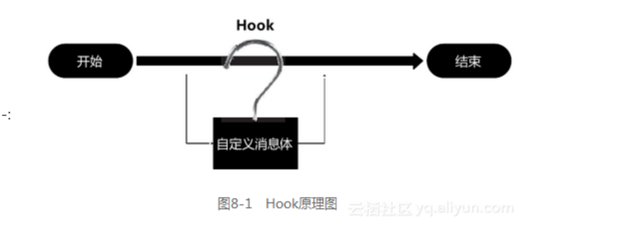

Hook简介
1、什么是Hook
Hook是钩子的意思，在Android 操作系统中系统维护着自己的一套事件分发机制。应用程序，包括应用触发事件和后台逻辑处理，也是根据事件流程一步步地向下执行。而钩子的意思，就是在事件传送到终点前截获井监控事件的传输，像个钩子钩上事件一样，并且能够在钩上事件时，处理一些自己特定的事件。较为形象的流程如下图所示。

2、Hook原理
Hook技术无论对安全软件还是恶意软件都是十分关键的一项技术，其本质就是劫持函数调用。但是由于处于Linux 用户态，每个进程都有自己独立的进程空间，所以必须先注入到所要Hook 的进程空间，修改其内存中的进程代码，替换其过程表的符号地址。在Android 中一般是通过ptrace函数附加进程，然后向远程进程注人so 库，从而达到监控以及远程进程关键函数挂钩。
3、Hook工作流程
Hook 的原理就是改变目标函数的指向，原理看起来并不复杂，但是实现起来却不是那么的简单。
这里我们将问题细分为两个
如何注入代码？
需要注入的代码我们存放在哪里？
如何注入代码？
如何注人动态链接库？
我们不能只在自己的进程载入动态链接库，如何使进程附着上目标进程？
如何让目标进程调用我们的动态链接库函数？
对于进程附着， Android 的内核中有一个函数叫ptrace，它能够动态地attach （跟踪一个目标进程）、detach （结束跟踪一个目标进程）、peektext （获取内存字节）、poketext （向内存写入地址）等，它能够满足我们的需求。而Android 中的另一个内核函数dlopen ，能够以指定模式打开指定的动态链接库文件。对于程序的指向流程，我们可以调用ptrace 让PC 指向LR 堆找。 最后调用，对目标进程调用diopen 则能够将我们希望注入的动态库注入至目标进程中。
对于代码的注入（ Hook API ），我们可以使用mmap 函数分配一段临时的内存来完成代码的存放。
1 | |
目标进程函数绝对地址＝函数地址+动态库基地址(偏移地址)
向目标进程中注入代码总结后的步骤分为以下几步。
( 1 ）用ptrace 函数attach 上目标进程。
( 2 ）发现装载共享库so 函数。
( 3 ）装载指定的 .so。
( 4 ）让目标进程的执行流程跳转到注入的代码执行。
( 5 ）使用ptrace 函数的detach 释放目标进程。
4、Hook 种类
Hook ，也就是平时我们所说的函数挂钩、函数注入、函数劫持等操作。
针对Android 操作系统，根据API Hook 对应API 不一样我们可以分为
使用Android SDK 开发环境的Java API Hook
使用Android NDK 开发环境的Native API Hook 。
对于Android 中so 库文件的函数Hook ，根据ELF 文件的特性能分为
Got 表Hook
Sym 表Hook
inline Hook 等。
根据Hook 方式的应用范围我们在Android这样一个特殊的环境中还能分别出
全局Hook
单个应用程序Hook。
对于Hook 程序的运行环境不同，还可以分为
用户级API Hook
用户级APIHook 主要是针对在操作系统上为用户所提供的API 函数方法进行重定向修改
内核级API Hook
内核级API Hook 则是针对Android 内核Linux 系统提供的内核驱动模式造成的函数重定向，多数是应用在Rootkit 中。
5、Java 层API Hook
通过对Android 平台的虚拟机注入与Java 反射的方式，来改变Android 虚拟机调用函数的方式（ClassLoader），从而达到Java 函数重定向的目的。这里我们将此类操作称为Java API Hook。
注意：因为是根据Java 中的反射机制来重定向函数的，那么很多Java 中反射出现的问题也会在此出现，
如无法反射调用关键字为native 的方法函数（开q 实现的函数），基本类型的静态常量无法反射修改等。
6、Native 层So 库Hook
主要是针对使用NDK开发出来的so 库文件的函数重定向，其中也包括对Android 操作系统底层的Linux 函数重定向，如使用so 库文件（ ELF 格式文件）中的全局偏移表GOT 表或符号表SYM 表进行修改从而达到的函数重定向，我们有可以对其称为GOT Hook 和SYM Hook。针对其中的inline 函数（内联函数）的Hook 称为inline Hook。